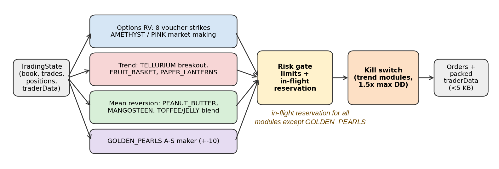
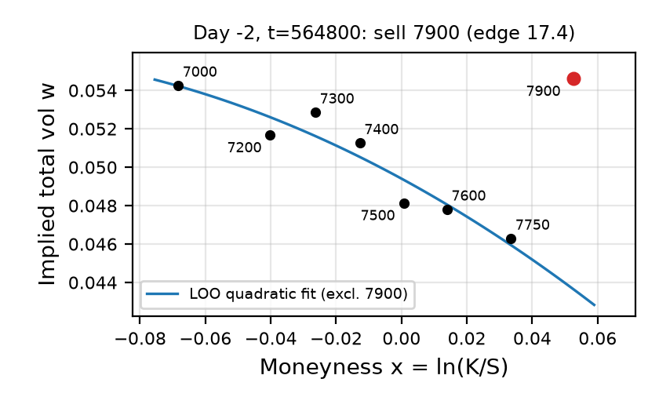
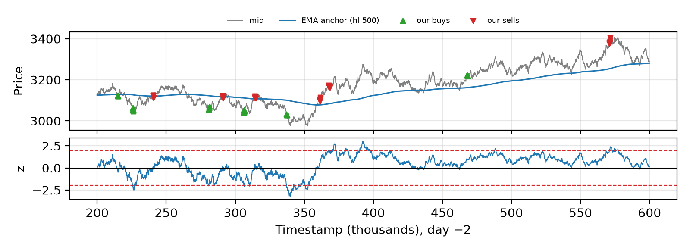
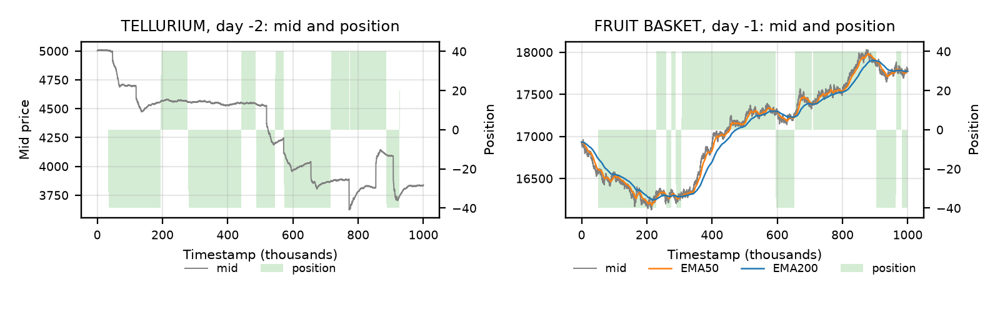
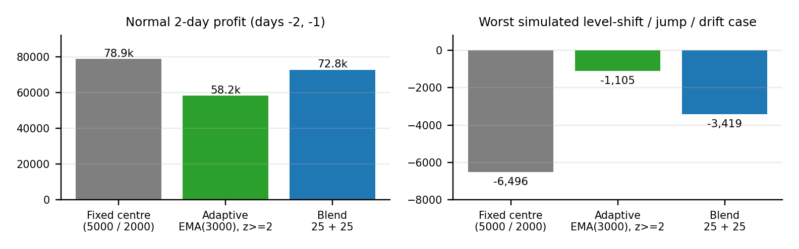
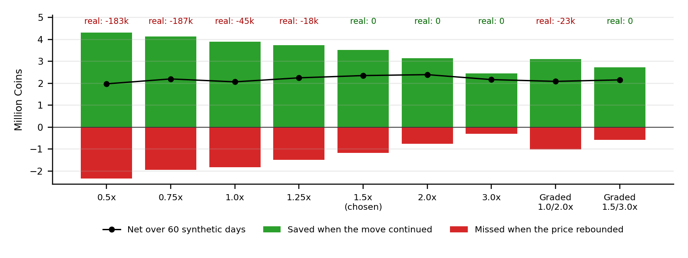
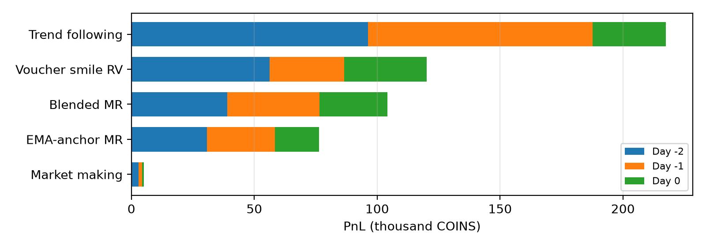

Team 1 | QuantiFi 2026 — Leena Li, Charles Zhou, Su Pu, Chloe Gao — code file Team01QuantiFi2026.py
Every product group gets its own causal module that turns order-book data into a target position; a shared execution layer converts targets into limit-safe orders (with in-flight order reservation for every module except GOLDEN_PEARLS, which has no cross-tick pending-order management), and a risk layer adds a drawdown kill switch on the trend products (Figure 1).

On the Portal order books we measured the average quoted spread, the per-tick volatility of mid-price changes σ1, the lag-1 autocorrelation of mid changes ρ1, the 100-tick variance ratio VR100 = Var(Δ100)/(100·Var(Δ1)) (below 1 indicates reversion, above 1 persistence; it describes only the 100-tick scale and is a diagnostic, not on its own sufficient to decide a product's family) and the average intraday high–low range (Table 1, averages over the three days).
| Product | Spread | σ1 | ρ1 | VR100 | Range | Family |
|---|---|---|---|---|---|---|
| AMETHYST | 3.0 | 0.50 | −0.50 | 0.01 | 1 | Market making |
| PINK_PEARLS | 4.0 | 1.00 | −0.13 | 0.76 | 194 | Market making (implied fair) |
| GOLDEN_PEARLS | 3.0 | 0.52 | −0.42 | 2.26 | 84 | Market making (inventory skew) |
| TOFFEE_CAKE | 14.1 | 3.10 | −0.23 | 0.45 | 138 | Blended MR |
| JELLY | 11.0 | 3.13 | −0.04 | 1.09 | 363 | Blended MR |
| PEANUT_BUTTER | 6.0 | 4.79 | −0.01 | 1.02 | 574 | EMA z-score MR |
| MANGOSTEEN | 4.0 | 2.48 | −0.03 | 0.88 | 306 | EMA z-score MR |
| PAPER_LANTERNS | 4.0 | 1.51 | −0.50 | 0.15 | 181 | Trend (rolling line) |
| TELLURIUM | 9.7 | 5.84 | −0.01 | 1.22 | 1,185 | Trend (swing breakout) |
| FRUIT_BASKET | 6.0 | 7.95 | 0.00 | 0.97 | 1,744 | Trend (EMA crossover) |
Table 1. Order-book statistics from the portal backtest (prices in COINS; Δn = n-tick mid change).
AMETHYST is pinned (range 1, VR100 = 0.01), so the only edge is the spread. TOFFEE_CAKE pairs the widest spread with clear reversion (ρ1 = −0.23, VR100 = 0.45). TELLURIUM and FRUIT_BASKET have the largest volatility and ranges (1,185 and 1,744 COINS), so holding through a drift earns far more than the half-spread paid. PAPER_LANTERNS bounces tick-to-tick (ρ1 = −0.50) yet travels 181 COINS a day, hence a 50-tick regression slope. PEANUT_BUTTER, MANGOSTEEN and JELLY revert on the slower EMA-anchor horizon (half-life 500–3000 ticks).
Table 2 lists each module and its parameters.
| Product(s) | Module | Key parameters |
|---|---|---|
| AMETHYST | Fixed-fair maker | fair 10000, cap 50, clip 5 |
| PINK_PEARLS | Implied-fair passive maker | fair = 50,000 − other four mids; fair ± 2, skew 2q/20, never crosses touch, cap 20 |
| GOLDEN_PEARLS | Avellaneda–Stoikov-style maker [2] | EMA fair (hl 20), r = fair − 2q/20, half-width max(1, σ), size 10, ±10 budget |
| VOUCHER_7000–7900 (8) | Smile relative value | thr 7.0, min 4 fitted strikes, r = 0, sweeps levels ≥ 7 through fair, cap 50 each |
| PEANUT_BUTTER | EMA z-score MR, frozen-anchor exit | anchor_hl 500, sd_hl 1000, warm-up 300, z 2, max hold 1000, cap 50 |
| MANGOSTEEN | EMA z-score MR | hl 500, z 2, cap 40 |
| PAPER_LANTERNS | Rolling-line trend with hysteresis | window 50, entry 0.05, exit 0.02, fair gate on, forecast horizon 50, cap 50 |
| TELLURIUM | Swing-breakout trend | threshold 10, cap 40 |
| FRUIT_BASKET | Own-price EMA-crossover trend | fast hl 50, slow hl 200, entry band = half-spread, warm-up 500, cap 40 |
| TOFFEE_CAKE, JELLY | Blended MR | 5000 ± 40 / 2000 ± 80; EMA hl 3000, z 2; cap 25 + 25; best level only |
Table 2. Modules and key parameters (caps in lots; hl = EMA half-life in ticks).
AMETHYST and the pearls trade around values that are constant or recoverable from related books, so the edge is providing liquidity. PINK_PEARLS uses fair = 50,000 minus the other four pearls' mids (Section 5), quotes passively at fair ± 2 with skew 2q/20 and never crosses the touch. GOLDEN_PEARLS uses an EMA fair value (half-life 20) and an inventory-shifted reservation price in the spirit of Avellaneda–Stoikov [2], r = fair − 2q/20 (skew 2; 20 = official limit; the γqσ² term is inactive, γ = 0), quoted at half-width max(1, σ), size 10, within an outer ±10 inventory budget and with no cross-tick pending management.
Voucher prices across strikes should lie on one smooth volatility smile; a strike that deviates from it is likely mispriced. Using the Black–Scholes call [1] with r = 0 written in total volatility w = σ√T,
we solve each strike's implied wk by safeguarded Newton, then fit a least-squares quadratic in moneyness x = ln(K/S), leaving the target strike out:
We buy when fairk − ask ≥ 7.0 and sell when bid − fairk ≥ 7.0, sweeping every book level that qualifies. Leaving the target out stops a mispriced strike from pulling the smile toward itself. A strike is traded only if at least four other strikes have a valid implied volatility; with r = 0 the price depends on T only through w, so only current quotes are needed (Figure 2). All eight interior strikes reached their 50-lot cap on every day.

PEANUT_BUTTER and MANGOSTEEN oscillate around a slowly moving level. We measure deviation from a lagged EMA anchor and scale it by an EWMA volatility (for PEANUT_BUTTER, anchor half-life 500 ticks and volatility half-life 1000 ticks):
For PEANUT_BUTTER the exit target is the anchor frozen at entry, so a drifting EMA cannot move the take-profit level away from the trade, and a maximum holding time caps exposure if reversion fails (Figure 3). No stop-loss is used: on PEANUT_BUTTER every stop variant we tested had a negative net.

PAPER_LANTERNS, TELLURIUM and FRUIT_BASKET show persistent intraday drifts that mean-reversion modules would fight. PAPER_LANTERNS uses the slope of a rolling linear fit with separate entry and exit bands (hysteresis), avoiding flips around a single threshold. A fair gate filters entries: the forecast exit level is the fitted value now plus 50 ticks of slope, and a level is taken only if this forecast beats the price by more than half the current spread. TELLURIUM enters on a break of the last confirmed swing high or low, using only already-confirmed pivots, so no future data is used. FRUIT_BASKET trades its own mid with an EMA crossover: dt = EMA50 − EMA200 (half-lives in ticks, both from prior ticks). After a 500-tick warm-up it targets +40 lots when dt exceeds half the bid–ask spread and −40 when it is below minus half the spread, and goes flat once dt changes sign against the position. Figure 4 shows the two illustrated modules.

TOFFEE_CAKE and JELLY revert around stable centres on the observed days, but a fixed centre is fragile if the level shifts. Each cap is split into two 25-lot legs: a fixed-centre leg trading 5000 ± 40 (TOFFEE_CAKE) or 2000 ± 80 (JELLY), and an adaptive leg trading |z| ≥ 2 around an EMA anchor (half-life 3000). We shifted price levels (±100 TOFFEE_CAKE, ±200 JELLY) and added jumps and drifts (Figure 5). A fixed centre loses its edge under a level shift (worst case −6,496); an adaptive EMA3000 centre is robust (worst −1,105) but keeps only 74% of normal profit; the 25 + 25 blend keeps 92% (72.8k vs 78.9k, two days, earlier development run; the final version, with different code and execution, earns 39,063 + 37,526 = 76,589) with a worst case of −3,419. Stop-losses made every variant worse, so there are none. Trading at the best level only saved 7.8k in spread and added 6.1k net over three days.

A shared helper converts the gap between target and position into orders and reserves capacity for orders that may still be working on the same side (Rbuy, Rsell), so the limit L is never breached even when fills arrive late (GOLDEN_PEARLS is the exception: it has no cross-tick pending-order management and relies on its ±10 inventory budget). Orders live one tick, so the cross-tick reservation is a conservative choice that can waste some capacity:
Qbuy ≤ max(0, L − q − Rbuy), Qsell ≤ max(0, L + q − Rsell).
Options sweep every book level at least 7 COINS through fair value; all other directional modules trade at the best level only, and the three makers rest passive quotes. Of 67,548 lots traded on the Portal (7,442 fills), 97.8% were aggressive; the makers' 1,504 lots were all passive and filled 1.51 (AMETHYST), 1.12 (GOLDEN_PEARLS) and 0.06 (PINK_PEARLS) COINS better than mid. Directional products touched their caps every day, while the makers peaked at 38 / 17 / 8 lots, well inside their limits.
The switch covers the three trend products. It tracks each product's intraday PnL from our own fills (positions marked at mid) and its running peak:
The kill-switch thresholds θp are 20,275.5 / 40,680 / 765 COINS for TELLURIUM / FRUIT_BASKET / PAPER_LANTERNS, 1.5× the largest intraday drawdown on development days −2 and −1. Once triggered, the product is flattened across the touch and receives no more orders that day; the flatten size subtracts possibly-working same-side orders, so it never crosses zero:
We compared multipliers 0.5×–3× and graded variants (halve, then stop) by two costs: profit missed when the price rebounds versus losses saved when the move continues (Figure 6). In a synthetic development experiment on an early prototype (60 stress days; not an independent validation of the final version) we chose 1.5× to balance retained historical profit and synthetic downside, rather than to maximize net benefit (1.5×: mean −5,132, worst day −135,696; 2.0×: mean −4,427, worst day −145,745). It did not fire on any of the three real days; 1.25× would have cut about 18k of real profit on day 0, and tighter thresholds 45k–187k. Graded protection halves the false-trigger cost but saves less, so its net is lower. In synthetic stress the switch cut the average daily loss from 44k to 5k and the worst-day loss from 437k to 136k. Mean-reversion modules deliberately have no kill switch: on PEANUT_BUTTER every stop variant had a negative net.

With the switch forced to fire under 1–3 tick order delays and duplicate callbacks, the flatten never crosses zero or reopens, and each own fill is booked once (de-duplicated by timestamp).
Table 3. Safeguards and residual exposure.
| Safeguard | What it controls | What remains exposed |
|---|---|---|
| Hard position caps (10–50 lots) + order reservation (not GOLDEN_PEARLS) | Limit breaches from late or pending fills | Full-cap exposure in a regime break |
| Kill switch (trend products) | Intraday loss after a trend reversal | Realized loss can exceed the threshold when depth is thin |
| Blended centres (TOFFEE_CAKE, JELLY) | Level shifts away from the fixed centre | Half the cap still on the fixed leg |
| Duplicate-callback guard, fill de-duplication | Double-counting state and own fills | Not assessed |
Compact traderData, per-module try/except | State loss; one failure stopping all products | A failing module stops trading its product |
All 18 traded products are positive; 53 of 54 product-days are positive (the only loss is MANGOSTEEN on day −2, −538 COINS). Daily PnL falls from day −2 to day 0, mainly in the trend family, from 96,222 to 29,884 COINS (Figure 7).
Table 4. Portal PnL by family, days −2 to 0.
| Family | PnL (COINS) | Share |
|---|---|---|
| Trend following | 217,532 | 41.6% |
| Voucher smile RV | 120,129 | 23.0% |
| Blended MR | 104,202 | 19.9% |
| EMA-anchor MR | 76,259 | 14.6% |
| Market making | 5,069.5 | 1.0% |
| Total | 523,191.5 | 100% |

PINK_PEARLS instead: fair = 50,000 minus the other four mids cuts its residual s.d. from 41–56 to about 5.We aligned our local backtester with the official Portal (days −2/−1/0 summed, one-tick order lifetime, the traderData size cap and fill de-duplication), after which our local replay matched the Portal exactly.
All results are in-sample (all three days were reused); TELLURIUM is parameter-sensitive (thresholds 10 / 20 / 40 gave 95k / 14k / 46k over three days), one reason the kill switch covers it. Candidates were also replayed pessimistically (strict passive fills, half passive volume, 1 COIN per lot).
Table 5. Main exposures and next steps.
| Exposure | Why | Next step |
|---|---|---|
| Trend concentration (41.6% of PnL) | Edge needs persistent drifts; trend PnL fell 96,222 → 29,884 | Scale kill-switch thresholds and entries to rolling volatility |
| Parameter selection on three days | TELLURIUM threshold, basket model chosen in-sample | Validate on new days; prefer flatter parameter regions |
| Spread cost | 97.8% of lots cross the spread | Passive entry where the signal horizon allows |
| Unhedged vouchers | Eight strikes at cap move together with LYCHEE | Delta-hedge with LYCHEE; revisit wing strikes |
| Fixed thresholds and centres | Kill switch may fire early/late; fixed legs fragile to level shifts | Volatility-scaled bands; adaptive weight on the blend |
[1] F. Black and M. Scholes, "The Pricing of Options and Corporate Liabilities," Journal of Political Economy, 81(3), 637–654, 1973.
[2] M. Avellaneda and S. Stoikov, "High-frequency trading in a limit order book," Quantitative Finance, 8(3), 217–224, 2008.